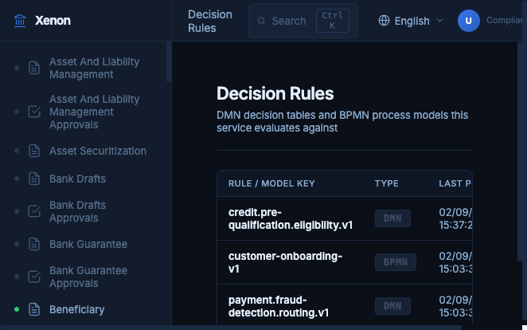
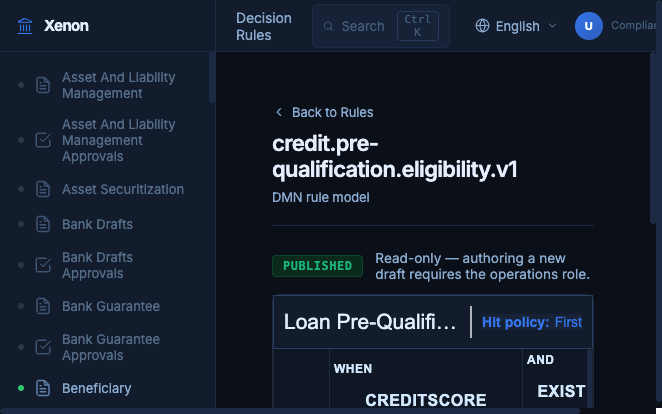
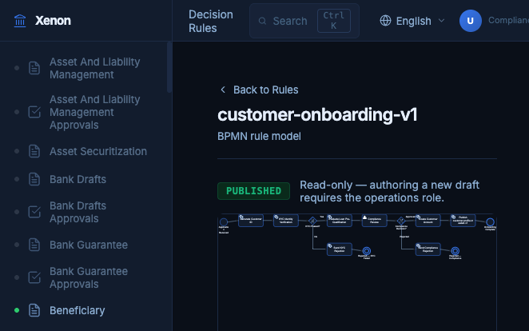
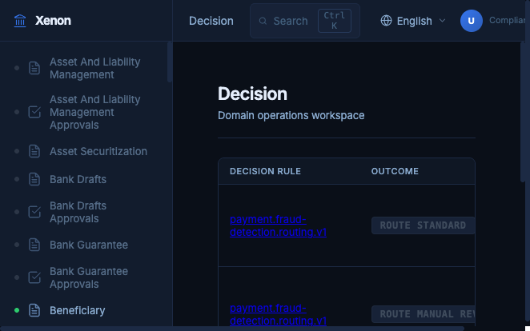
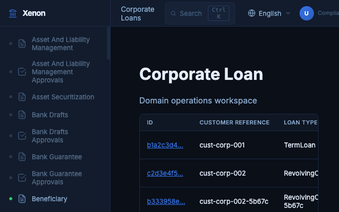
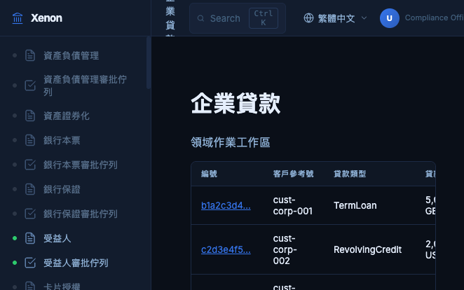

Xenon — BIAN-aligned banking orchestration platform
Xenon is VecPay-tech's reference implementation of a BIAN v14-aligned banking orchestration platform: event-driven microservices, multi-engine workflow orchestration (Temporal + Flowable), an externalized Decision Service (Flowable DMN), and a unified, role-based operations portal built as a React micro-frontend.
Overview
What Xenon is and why it exists
Xenon combines governance documentation, a runnable backend platform, and a unified operations portal in a single repository. It is designed as a demonstrable, contract-first reference architecture for banks and fintechs building on the BIAN service landscape — not a toy demo, but a platform with real transactional outbox event publication, maker-checker approval workflows, JWT-based OAuth2 security, and a full five-layer test standard applied per domain service.
The platform currently runs locally on Docker/Podman Compose for development and demos; production targets AWS EKS, MSK, and Aurora (see the project's Architecture Decision Records for the full rationale).
Architecture
Five runtime concerns, each with a distinct owner
| Concern | Technology |
|---|---|
| Distributed machine workflows and sagas | Temporal |
| Human approvals, exceptions, SLA tasks | Flowable BPMN/CMMN |
| Policy externalization (eligibility, routing, thresholds) | Decision Service (Flowable DMN) |
| Event streaming and CEP analytics | Kafka + Flink (Phase 2) |
| Unified operations portal (role-based, multi-domain UI) | React 18 + Vite Module Federation |
Domain services are BIAN-aligned, contract-first microservices — OpenAPI and AsyncAPI are the source of truth for interfaces. Every state-changing write goes through a transactional outbox (never a direct Kafka publish inside a transaction), and every domain service must satisfy a five-layer test standard: controller unit tests, service integration tests, outbox relay tests, and consumer/provider Pact contract tests.
Screenshots
The unified operations portal, captured from a running local instance






Governance & Rule Authoring
Maker-checker controls for policy rule changes
Business rules (DMN decision tables) and process models (BPMN diagrams) are authored directly in the portal by operations users, then routed through a compliance approval queue before publication. Every draft carries a compatibility report and a test report generated against the rule's existing test cases, and every approve/reject action requires a recorded rationale — satisfying the platform's 100%-audit-coverage requirement for privileged, financial state-changing actions.
Getting Started
Run the full stack locally with Docker Compose
git clone https://github.com/VecPay-tech/xenon.git
cd xenon
# Backend platform (Java 21 / Maven monorepo)
cd platform
mvn clean install -DskipTests # ~20s, 28+ modules
# Full stack (Postgres, Kafka, Keycloak, Temporal, gateway, domain services)
cd ..
docker compose --profile platform up -d
# Unified operations portal (React micro-frontend, pnpm workspace)
cd portal
pnpm install
pnpm --filter shell dev # http://localhost:3010
See the repository's README.md and CLAUDE.md for the full
developer onboarding runbook, domain graduation checklist, and non-functional release
gates.
Repository Structure
A single repo for governance docs, backend, and portal
| Directory | Role |
|---|---|
docs/ | Normative standards, contracts, schemas, ADRs, governance artifacts |
platform/ | Maven monorepo implementing all domain services (Java 21, Spring Boot 4) |
portal/ | pnpm workspace implementing the Unified Operations Portal (React 18, Vite Module Federation) |
bian/ | The BIAN v14 service landscape reference used to derive domain contracts |
Status & Roadmap
Where the platform stands today
35 of 258 catalogued BIAN domains are fully graduated (real entities, migrations, outbox-backed writes, gateway routes, and full five-layer test coverage), including Payment Execution, Customer Profile, Decision Service, Beneficiary Management, Current Account, and Corporate Loan. The remainder are scaffolded and boot with health checks only, ready to be graduated using the platform's mechanical graduation pipeline.
Deferred to later phases: a shared demo environment on Oracle OCI, AWS EKS/MSK/Aurora production deployment, and Apache Flink-based complex event processing.